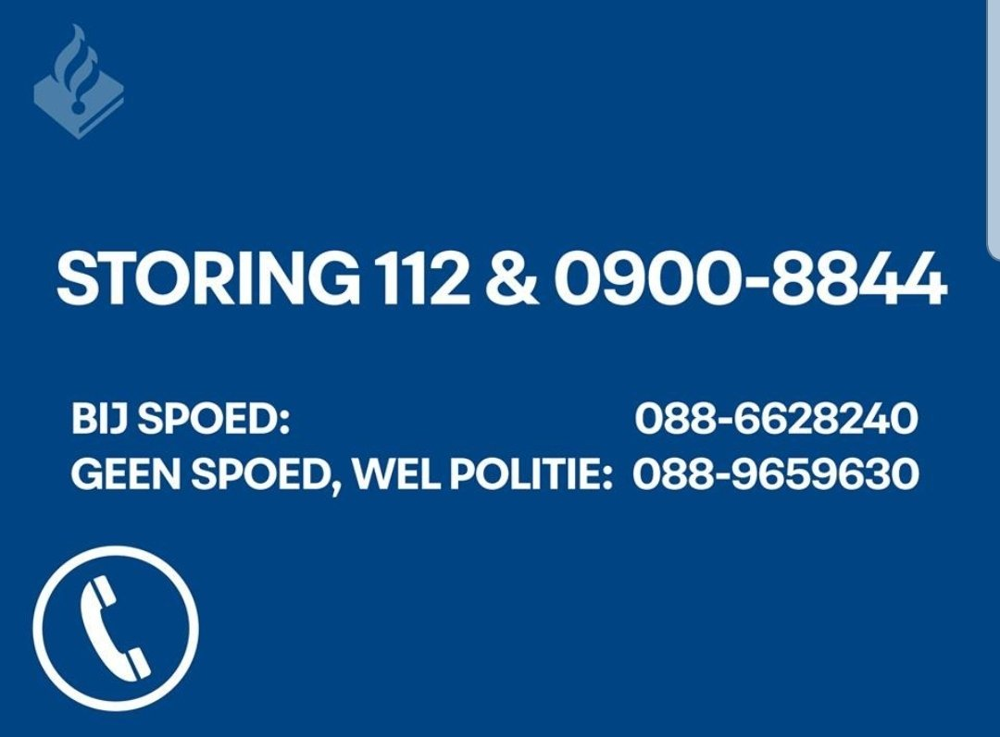
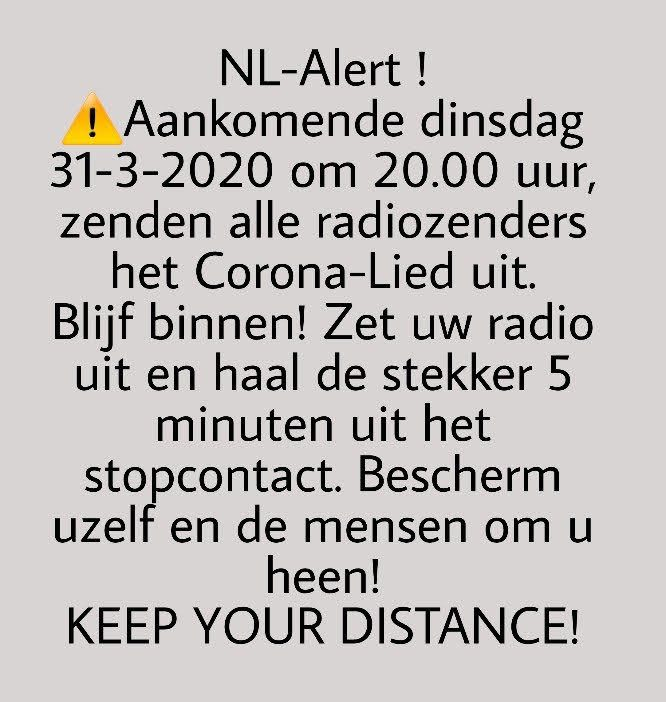
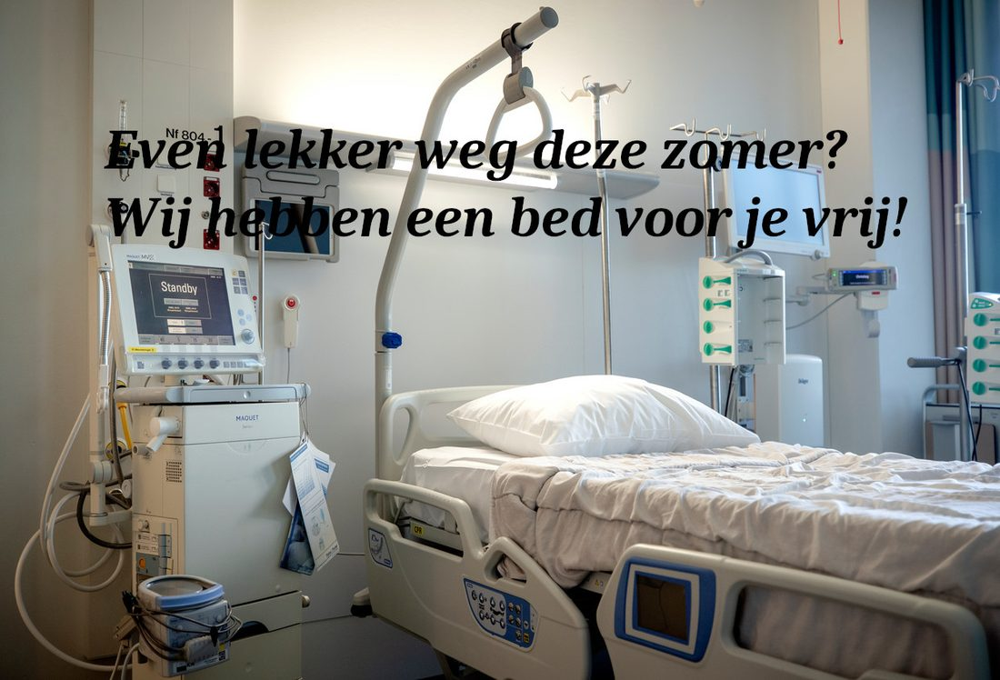

Het Crisus-museum
Sinds 24 juni 2019 hangt crisus.nl aan de muur bij elke crisis. Hier de vitrines, van oud naar nieuw. Niet aankomen. Ook niet aan likken.
-

De 112-storing
De allereerste crisus.nl: de vervangende nummers voor de avond dat 112 eruit lag. Dat waren de nummers van toen. Vandaag belt u bij nood gewoon 112. Het nummer bovenaan werkt nog altijd: 0900-8844. Voor de liefhebbers ook bekend als 0900-TUIG.
Beeld: Politie, 2019. -
CyberBunker
Het bord van het Landeskriminalamt Rheinland-Pfalz na de inval in de bunker in Traben-Trarbach. Op crisus.nl hing het ook. Wij hebben niets in beslag genomen. Alleen de afbeelding.
Beeld: Landeskriminalamt Rheinland-Pfalz, 2019. -
<?php header('Location: https://hack42.nl/wiki/Nieuwjaarsborrel_2020');De nieuwjaarsborrel
Even geen crisis. Crisus.nl stuurde u door naar de nieuwjaarsborrel van Hack42. In PHP. Achteraf gezien het spannendste stuk van deze vitrine.
-

Het Corona-Lied
Een nep-NL-Alert: alle radiozenders zenden het Corona-Lied uit, dus “zet uw radio uit en haal de stekker 5 minuten uit het stopcontact”. Het eerste advies op crisus.nl om iets uit te zetten. Niet het laatste.
-

IC-vakantie
“Even lekker weg deze zomer? Wij hebben een bed voor je vrij!” Het enige reisaanbod waar u beter niet op kon ingaan.
Foto: bron onbekend. -
Het coronadashboard
Het dashboard van de Reichsoverheid. Het echte dashboard van de Rijksoverheid liep van 5 juni 2020 tot 2 april 2024. Onze parodie kwam in juli 2020, kreeg tot november 2021 nieuwe cijfers en bleef daarna net zo lang staan. Het heeft een eigen zaal: de gedenkplaats. Neem gerust een bloem mee.
-
PHP in quarantaine
Op de dag van PHP2Shell hingen deze drie op sites waar PHP uit voorzorg uit stond. Elke herlaadbeurt koos er een, in het Engels of het Nederlands. Klik ze maar open, ook terminal, afzetlint en aurora in het Nederlands. Ze geven nu een gewone 200. Tegen alle verwachtingen in.
-
En natuurlijk
De lopende crisus zelf, en een pagina die uit voorzorg offline is gehaald.
De vitrines van 2019 en 2020 tonen beeld van anderen: de politie, het Landeskriminalamt Rheinland-Pfalz en een fotograaf die wij niet kennen. Ze hangen hier als archief, met bron. Bent u de rechthebbende en hangt het hier liever niet? Laat het weten via annejan.com, dan halen we het weg.